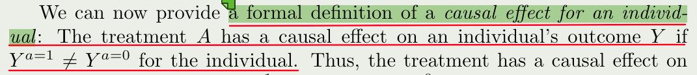
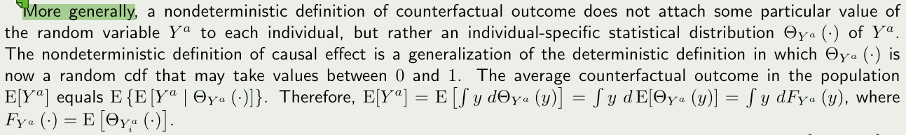
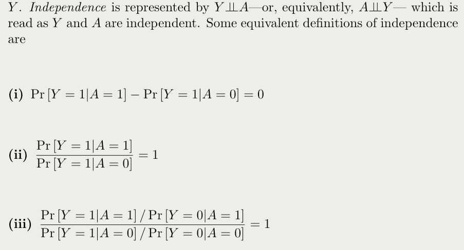
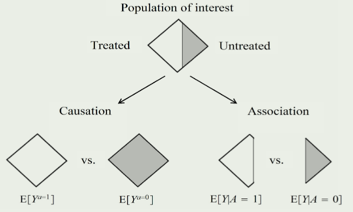

1 A definition of causal effect
1.1 Individal causal effects
对于个体 \(i\) 的因果效应符号表达: \[Y_i^a=1 ≠ Y_i^a=0\]
另外：\(Y^{a=1}\) 或 \(Y^{a=0}\)，表示随机变量。
正式的个体因果效应的定义：

变量： \(Y^{a=1}\) 或 \(Y^{a=0}\) 被称为潜在结局或反事实结局
对一致性的理解(Consistency)：假设某人接受某种治疗后的结局和观察到的这个人接受治疗的结果一致，用符号表达：if \(A_i = a\), then \(Y_i^a = Y_i^A = Y_i\)
Individual causal effects are defined as a contrast of the values of counterfactual outcomes, but only one of those outcomes is observed for each individualthe one corresponding to the treatment value actually experienced by the individual. All other counterfactual outcomes remain unobserved. Because of missing data, individual effects cannot be identified, i.e., they cannot be expressed as a function of the observed data (See Fine Point 2.1 for a possible exception.)
no interaction between units或者 stable-unit-treatment-value assumption (SUTVA)
隐含的条件是，每个个体接受治疗后的效应，不会因为其他个体是否接受治疗而改变
1.2 Average causal effect
正式的人群平均因果效应的定义：

每个个体间的因果效应虽然不同，但是每个个体的因果效应的均值可能刚好相互抵消 ，这个时候群体因果效应就是0了，如果每个个体都不存在因果效应，群体也没有因果效应，这种情况，称之为the sharp causal null hypothesis 得到满足
Multiple versions of treatment 假设干预都是一模一样的，可以称为 treatment variation irrelevance
1.3 Measures of causal effect
没有因果效应可以这样判断：

加法尺度或称乘法尺度的选择根据需求确定

1.4 Random variability
抽样得到的率和真实人群的率存在误差，可以通过增大样本量来逼近——大数定理

因果推断中的随机误差还可能来自反事实结果的不确定性 例如：接受治疗90%死亡，不接受20%死亡
Thus, in causal inference, random error derives from sampling variability, nondeterministic counterfactuals, or both.
每个个体暴露后产生结局Y的值不是固定的，而是满足一个分布

每个个体暴露后结局可能分布的条件下的结局期望，代表这个人暴露后的结局 再进一步对所有人求期望
1.5 Causation versus association
注意和前面的因果效应的判断区别，这里指的是association 用的是proportion

因果和关联的区别的理解

因果效应：整个人群中的暴露的风险，无条件的 效应（关联）：整个人群中，暴露人群中的风险，是有条件的，condition on A = 1
以后说因果就说 causal effect ，说关联只说effect
1.6 Summarize
- 个体因果效应和人群平均因果效应的符号表示
- the sharp causal null hypothesis，群体因果效应为0不代表个体因果效应为0
- 因果效应的度量 VS 关联的度量（都是三种）
- 因果推断中误差来源有两种，分别是抽样的随机变异和反事实结果的不确定性（个体暴露后的结局不是定值而是服从一个概率分布）
- 关联和因果的区别